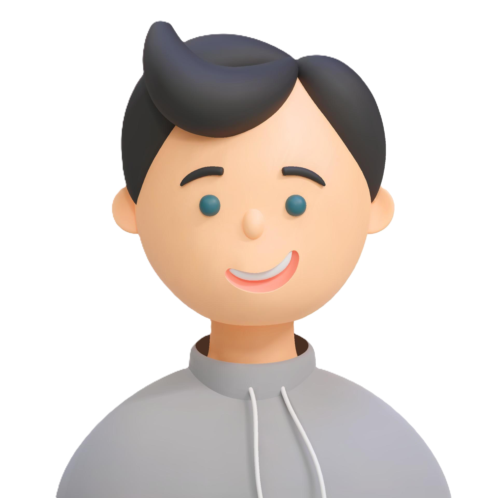

أحمد - قصة نجاح في عالم البرمجة
رغم إعاقته البصرية، لم يستسلم أحمد (28 عاماً) لتحدياته. بدأ رحلته في تعلم البرمجة باستخدام قارئات الشاشة وتقنيات التكنولوجيا المساعدة عندما كان في السابعة عشر من عمره. اليوم، يعمل كمطور برمجيات رئيسي في إحدى أكبر شركات التكنولوجيا، حيث طور العديد من التطبيقات التي تساعد الأشخاص ذوي الإعاقات البصرية. يقود أحمد أيضاً مبادرة "برمجة بلا حدود" التي علّمت البرمجة لأكثر من 500 شخص من ذوي الإعاقات المختلفة. حصل على جائزة الإبداع التقني لعام 2023 لتطويره تطبيقاً يحول النصوص إلى برايل بشكل فوري.